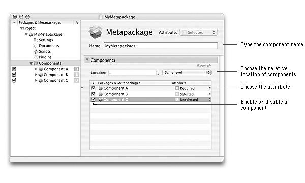

| Attribute | Installed by default | Changeable in Custom Install |
| Selected | Yes | Yes |
| Unselected | No | Yes |
| Required | Yes | No |
This document shows how to manage components of a project, be it adding, sorting, importing, removing or renaming components.

Adding a component to a metapackageA metapackage can contain one or more components. These components can be packages or/and metapackages. You can add a component to a metapackage by:
To add a new component to a metapackage:
| 1 | Select the metapackage in the Packages & Metapackages list. | ||
| 2 | Choose View > Components. | ||
| 3 | Choose Project > New Component… .
| ||
| 4 | Type the name of the component in the Component name text field. | ||
| 5 | Choose the component type from the Type pop-up menu. | ||
| 6 | Choose the component attribute from the Attribute pop-up menu. | ||
| 7 | Click Add. |
To add an already built component to a metapackage:
| 1 | Select the metapackage in the Packages & Metapackages list. | ||
| 2 | Choose View > Components. | ||
| 3 | Choose Project > Import Components… .
| ||
| 4 | Select the components (.pkg or .mpkg) to import.
| ||
| 5 | Click Import. |
To add a component defined by a PackageMaker project to a metapackage in an Iceberg project::
| 1 | Select the metapackage in the Packages & Metapackages list. | ||
| 2 | Choose View > Components. | ||
| 3 | Select the PackageMaker project in the Finder.
| ||
| 4 | Drag and drop the file in the Components list. |
To add a component from another Iceberg project:
| 1 | Select the metapackage in the Packages & Metapackages list. |
| 2 | Choose View > Components. |
| 3 | Choose File > Open… . |
| 4 | Select the Iceberg project which contains the component to add and click Add. |
| 5 | Select the component of the source project in the Packages & Metapackages list. |
| 6 | Drag and drop the component to the destination project Components list. |
You may want to rename a component so that its name is more related to its content. It is important to remember this is also the name which is used for the .pkg or .mpkg bundle when the project is built.
|
To rename a component:
| 1 | Select the metapackage in the Packages & Metapackages list. |
| 2 | Choose Project > Rename. |
| 3 | Type the new name in the text field and press Return. |
A component attribute specifies if the component of a metapackage will be installed or not by default. The attribute can eventually be changed by the user in the Custom Install mode of Installer.
The attribute of a component can take three values:
| ||||||||||||||||||
|
To change a component attribute:
| 1 | Select the component in the Packages & Metapackages list. | ||
| 2 | Choose the attribute fromm the Attribute pop-up menu.
|
By default, when you create a new component, it is enabled. This means that it will be built when the project is being built. This state is displayed in the Membership (•) column of the Packages & Metapackages list.
To enable or disable a component:
| 1 | Select the component in the Packages & Metapackages list. | ||
| 2 | Select or unselect the checkbox in the Membership (•) column.
|
You can remove a component from the components hierarchy. If you remove a metapackage, all its components will be removed too.
To remove a component:
| 1 | Select the component in the Packages & Metapackages list. | ||
| 2 | Choose Edit > Delete | ||
| 3 | Click Delete
|
You can reorder the components hierarchy by moving components from one metapackage to another or by sorting components by name or attributes. You need to remember that the hierarchy of components as displayed in the Packages & Metapackages list will be the one displayed in the Custom Install mode of Installer and used during the installation.
To change the parent metapackage of a component:
| 1 | Select the component in the Packages & Metapackages list. | ||
| 2 | Drag and drop the component in the Components folder of the target metapackage.
|
To manually sort components of the same level:
| 1 | Select the component in the Packages & Metapackages list. |
| 2 | Drag and drop the component in the Components folder of its parent metapackage to change its position. |
To automatically sort components of the same level:
| 1 | Select the components to sort in the Packages & Metapackages list. |
| 2 | Choose View > Components. |
| 3 | Choose Project > Sort > By Name to sort components by name or Project > Sort > By Attribute to sort them by attributes. |
If necessary, you can group components of the samel level in a metapackage. It is also possible to ungroup all the components of a metapackage.
To group components in a metapackage:
| 1 | Select the components to group in the Packages & Metapackages list.
| ||
| 2 | Choose Project > Group. |
To ungroup all the components of a metapackage:
| 1 | Select all the components at the first level of the metapackage in the Packages & Metapackages list.
| ||
| 2 | Choose Project > Ungroup. |
By default, when the project is being build, the components of a metapackage are created at the same level as the metapackage. You can change the relative location of components, for instance to have them be created within the metapackage itself.
To change the relative location of components of a metapackage:
| 1 | Select the metapackage in the Packages & Metapackages list. | ||
| 2 | Choose View > Components. | ||
| 3 | Choose the relative location from the Location pop-up menu or type the relative location in the Location text field.
|